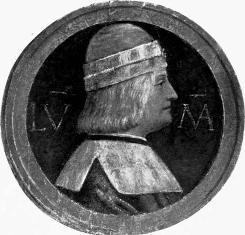

Chapter II. The Pope And The Supernatural
Description
This section is from the book "The Life Of Cesare Borgia", by Rafael Sabatini. Also available from Amazon: The Life of Cesare Borgia.
Chapter II. The Pope And The Supernatural
By the middle of March of that year 1495 the conquest of Naples was a thoroughly accomplished fact, and the French rested upon their victory, took their ease, and made merry in the capital of the vanquished kingdom.
But in the north Lodovico Sforza now Duke of Milan de facto, as we have seen set about the second part of the game that was to be played. He had a valuable ally in Venice, which looked none too favourably on the French and was fully disposed to gather its forces against the common foe. The Council of Ten sent their ambassador, Zorzi, to the Pope to propose an alliance.
News reached Charles in Naples of the league that was being formed. He laughed at it, and the matter was made the subject of ridicule in some of the comedies that were being performed for the amusement of his Court. Meanwhile, the intrigue against him went forward ; on March 26 his Holiness sent the Golden Rose to the Doge, and on Palm Sunday the league was solemnly proclaimed in St. Peter's. Its terms were vague ; there was nothing in it that was directly menacing to Charles; it was simply declared to have been formed for the common good. But in the north the forces were steadily gathering to cut off the retreat of the French, and suddenly Lodovico Sforza threw aside the mask and made an attack upon the French navy at Genoa.
At last Charles awoke to his danger and began to care for his safety. Rapidly he organized the occupation of Naples, and, leaving Montpensier as Viceroy and d'Aubigny as Captain-General, he set out for Rome with his army, intent upon detaching the Pope from the league; for the Pope, being the immediate neighbour of Naples, would be as dangerous as an enemy as he was valuable as an ally to Charles.
He entered Rome on June i. The Pope, however, was not there to receive him. Alexander had left on May 28 for Orvieto, accompanied by Cesare, the Sacred College, 200 men at arms, and 1,000 horse and 3,000 foot, supplied by Venice. At Orvieto, on June 3, the Pontiff received an ambassador from the Emperor, who had joined the league, and on the 4th he refused audience to the ambassador of France, sent to him from Ronciglione, where the King had halted. Charles, insistent, sent again, determined to see the Pope; but Alexander, quite as determined not to see the king, pushed on to Perugia with his escort.
There his Holiness abode until the French and Italians had met on the River Taro and joined battle at Fornovo, of which encounter both sides claimed the victory. If Charles's only object was to win through, then the victory undoubtedly was his, for he certainly succeeded in cutting a way through the Italians who disputed his passage. But he suffered heavily, and left behind him most of his precious artillery, his tents and carriages, and the immense Neapolitan booty he was taking home, with which he had loaded (says Gregorovius) twenty thousand mules. All this fell into the hands of the Italian allies under Gonzaga of Mantua, whilst from Fornovo Charles's retreat was more in the nature of a flight. Thus he won back to France, no whit the better for his expedition, and the only mark of his passage which he left behind him was an obscene ailment, which, with the coming of the French into Italy, first manifested itself in Europe, and which the Italians paid them the questionable compliment of calling " the French disease " morbo gallico, or il mat francese.
During the Pope's visit to Perugia an incident occurred which is not without importance to students of his character, and of the character left of him by his contemporaries and others.
There lived in Perugia at this time a young nun of the Order of St. Dominic, who walked in the way of St. Catherine of Siena, Colomba da Rieti by name. You will find some marvellous things about her in the Perugian chronicles of Matarazzo, which, for that matter, abound in marvellous things too marvellous mostly to be true.
When he deals with events happening beyond the walls of his native town Matarazzo, as an historian, is contemptible to a degree second only to that of those who quote him as an authority. When he deals with matters that, so to speak, befell under his very eyes, he is worthy, if not of credit at least of attention, for his " atmosphere " is valuable.
Of this Sister Colomba Matarazzo tells us that she ate not nor drank, save sometimes some jujube fruit, and even these but rarely. " On the day of her coming to Perugia (which happened in 1488), as she was crossing the Bridge of St. Gianni some young men attempted to lay hands upon her, for she was comely and beautiful; but as they did so, she showed them the jujube fruit which she carried in a white cloth, whereupon they instantly stood bereft of strength and wits."
Next he tells us how she would pass from life for an hour or two, and sometimes for half a day, and her pulse would cease to beat, and she would seem all dead. And then she would quiver and come to herself again, and prophesy the future, and threaten disaster. And again : " One morning two of her teeth were found to have fallen out, which had happened in fighting with the devil; and, for the many intercessions which she made, and the scandals which she repaired by her prayers, the people came to call her saint."
DUKE LODOVICO MARIA SFORZA. (From the fresco by Bernardino Luini.)
Notwithstanding all this, and the fact that she lived without nourishment, he tells us that the brothers of St. Francis had little faith in her. Nevertheless, the community built her a very fine monastery, which was richly endowed, and many nuns took the habit of her Order.
Now it happened that whilst at Perugia in his student days, Cesare had witnessed a miracle performed by this poor ecstatic girl; or rather he had arrived on the scene the Church of St. Catherine of Siena to find her, with a little naked boy in her lap, the centre of an excited, frenzied crowd, which was proclaiming loudly that the child had been dead andithat she had resurrected him. This was a statement which the Prior of the Dominicans did not seem disposed unreservedly to accept, for, when approached with a suggestion that the bells should be rung in honour of the event, he would not admit that he saw any cause to sanction such a course.
Continue to: